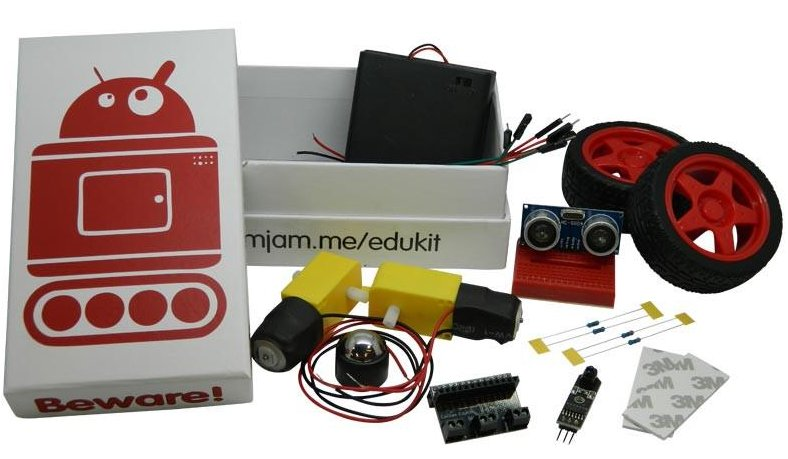

CamJam Edukit 3 Robot¶
This example drives the CamJam EduKit 3 robot and is based on Tiny4WD Robot Drive with some modifications by Mike Horne to support the different motor driver board that kit uses.
The code below shows, with a few extra bits and pieces needed in case you’re running without the robot libraries, how to use this library to drive it around. The left analogue stick controls the robot, and the HOME button exits.
1 2 3 4 5 6 7 8 9 10 11 12 13 14 15 16 17 18 19 20 21 22 23 24 25 26 27 28 29 30 31 32 33 34 35 36 37 38 39 40 41 42 43 44 45 46 47 48 49 50 51 52 53 54 55 56 57 58 59 60 61 62 63 64 65 66 67 68 69 70 71 72 73 74 75 76 77 78 79 80 81 82 83 84 85 86 87 88 89 90 91 92 93 94 95 96 97 98 99 100 101 102 103 104 105 106 107 108 109 110 111 112 113 114 115 116 117 118 119 120 121 122 123 124 125 126 127 128 129 130 131 132 133 134 135 136 137 138 139 140 141 142 143 144 145 146 147 148 149 150 151 152 153 154 155 156 157 158 159 160 161 162 163 164 165 166 167 | # Code for CamJam EduKit 3 robot
#
# By Mike Horne, based on code by Tom Oinn/Emma Norling code
# Need floating point division of integers
from __future__ import division
from time import sleep
try:
# Attempt to import the GPIO Zero library. If this fails, because we're running somewhere
# that doesn't have the library, we create dummy functions for set_speeds and stop_motors which
# just print out what they'd have done. This is a fairly common way to deal with hardware that
# may or may not exist!
# Use GPIO Zero implementation of CamJam EduKit robot (thanks Ben Nuttall/Dave Jones!)
from gpiozero import CamJamKitRobot
print('GPIO Zero found')
# Get the robot instance and the independent motor controllers
robot = CamJamKitRobot()
motor_left = robot.left_motor
motor_right = robot.right_motor
# Motors are reversed. If you find your robot going backwards, set this to 1
motor_multiplier = -1
def set_speeds(power_left, power_right):
"""
As we have an motor hat, we can use the motors
:param power_left:
Power to send to left motor
:param power_right:
Power to send to right motor, will be inverted to reflect chassis layout
"""
# If one wants to see the 'raw' 0-100 values coming in
# print("source left: {}".format(power_left))
# print("source right: {}".format(power_right))
# Take the 0-100 inputs down to 0-1 and reverse them if necessary
power_left = (motor_multiplier * power_left) / 100
power_right = (motor_multiplier * power_right) / 100
# Print the converted values out for debug
# print("left: {}".format(power_left))
# print("right: {}".format(power_right))
# If power is less than 0, we want to turn the motor backwards, otherwise turn it forwards
if power_left < 0:
motor_left.backward(-power_left)
else:
motor_left.forward(power_left)
if power_right < 0:
motor_right.backward(-power_right)
else:
motor_right.forward(power_right)
def stop_motors():
"""
As we have an motor hat, stop the motors using their motors call
"""
# Turn both motors off
motor_left.stop()
motor_right.stop()
except ImportError:
print('GPIO Zero not found, using dummy functions.')
def set_speeds(power_left, power_right):
"""
No motor hat - print what we would have sent to it if we'd had one.
"""
print('DEBUG Left: {}, Right: {}'.format(power_left, power_right))
sleep(0.3)
def stop_motors():
"""
No motor hat, so just print a message.
"""
print('DEBUG Motors stopping')
# All we need, as we don't care which controller we bind to, is the ControllerResource
from approxeng.input.selectbinder import ControllerResource
# Enable logging of debug messages, by default these aren't shown
# import logzero
# logzero.setup_logger(name='approxeng.input', level=logzero.logging.DEBUG)
class RobotStopException(Exception):
"""
The simplest possible subclass of Exception, we'll raise this if we want to stop the robot
for any reason. Creating a custom exception like this makes the code more readable later.
"""
pass
def mixer(yaw, throttle, max_power=100):
"""
Mix a pair of joystick axes, returning a pair of wheel speeds. This is where the mapping from
joystick positions to wheel powers is defined, so any changes to how the robot drives should
be made here, everything else is really just plumbing.
:param yaw:
Yaw axis value, ranges from -1.0 to 1.0
:param throttle:
Throttle axis value, ranges from -1.0 to 1.0
:param max_power:
Maximum speed that should be returned from the mixer, defaults to 100
:return:
A pair of power_left, power_right integer values to send to the motor driver
"""
left = throttle + yaw
right = throttle - yaw
scale = float(max_power) / max(1, abs(left), abs(right))
return int(left * scale), int(right * scale)
# Outer try / except catches the RobotStopException we just defined, which we'll raise when we want to
# bail out of the loop cleanly, shutting the motors down. We can raise this in response to a button press
try:
while True:
# Inner try / except is used to wait for a controller to become available, at which point we
# bind to it and enter a loop where we read axis values and send commands to the motors.
try:
# Bind to any available joystick, this will use whatever's connected as long as the library
# supports it.
with ControllerResource(dead_zone=0.1, hot_zone=0.2) as joystick:
print('Controller found, press HOME button to exit, use left stick to drive.')
print(joystick.controls)
# Loop until the joystick disconnects, or we deliberately stop by raising a
# RobotStopException
while joystick.connected:
# Get joystick values from the left analogue stick
x_axis, y_axis = joystick['lx', 'ly']
# Get power from mixer function
power_left, power_right = mixer(yaw=x_axis, throttle=y_axis)
# Set motor speeds
set_speeds(power_left, power_right)
# Get a ButtonPresses object containing everything that was pressed since the last
# time around this loop.
joystick.check_presses()
# Print out any buttons that were pressed, if we had any
if joystick.has_presses:
print(joystick.presses)
# If home was pressed, raise a RobotStopException to bail out of the loop
# Home is generally the PS button for playstation controllers, XBox for XBox etc
if 'home' in joystick.presses:
raise RobotStopException()
except IOError:
# We get an IOError when using the ControllerResource if we don't have a controller yet,
# so in this case we just wait a second and try again after printing a message.
print('No controller found yet')
sleep(1)
except RobotStopException:
# This exception will be raised when the home button is pressed, at which point we should
# stop the motors.
stop_motors()
|